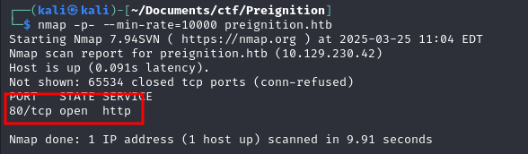
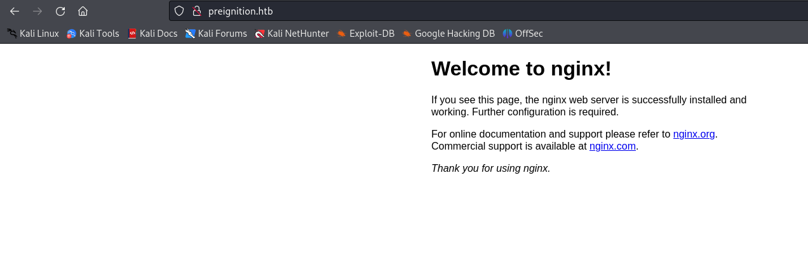
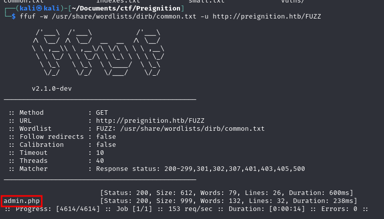

First of all, I add preignition.htb into my /etc/hosts
Then I did an nmap scan and found that port 80 is open.

This is what we get if we go to preignition.htb.

I used fuff to look for interesting urls.
ffuf -w /usr/share/wordlists/dirb/common.txt -u http://preignition.htb/FUZZ
This is how I found admin.php

After that, I tried the most basic default credentials, which were admin:admin and got the flag!